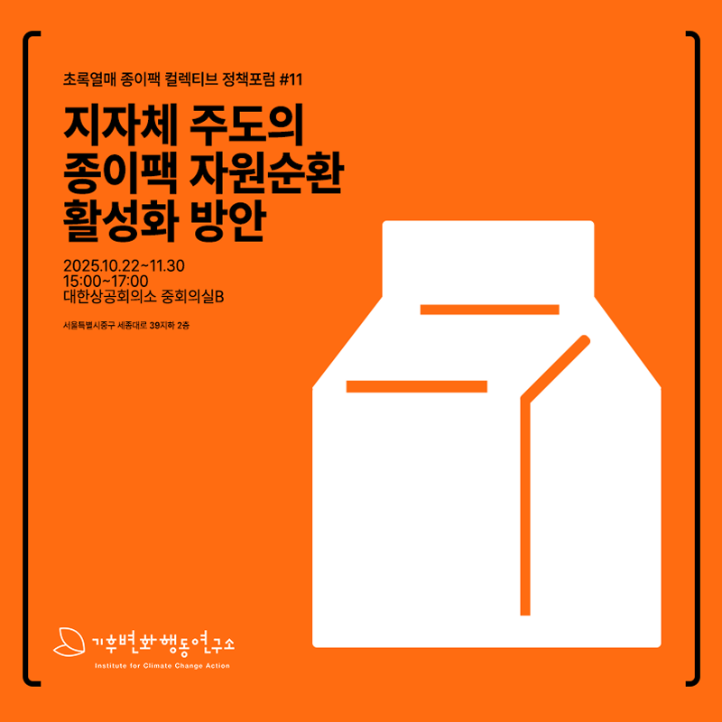
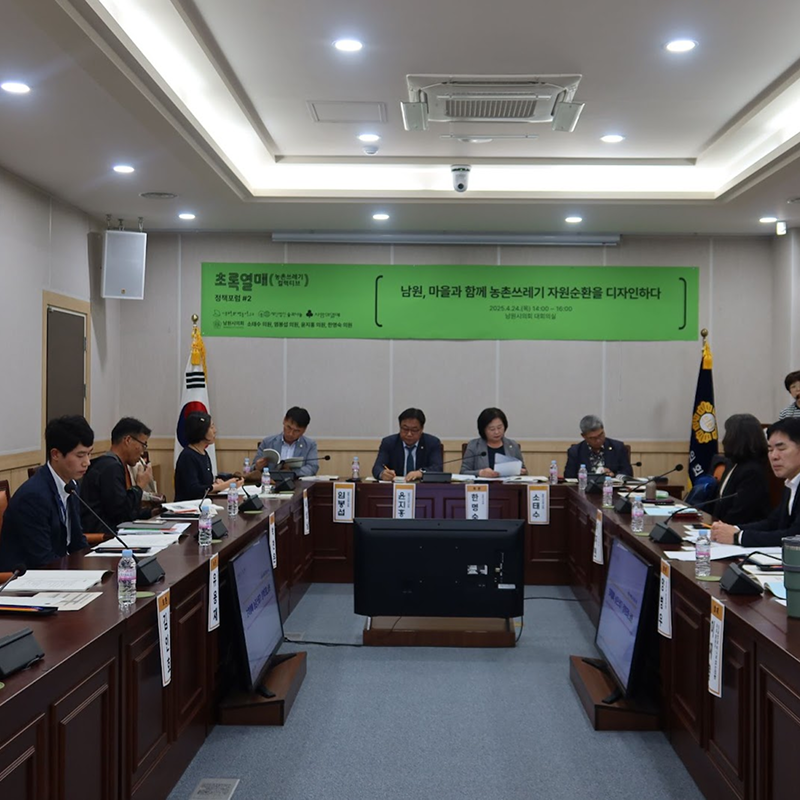
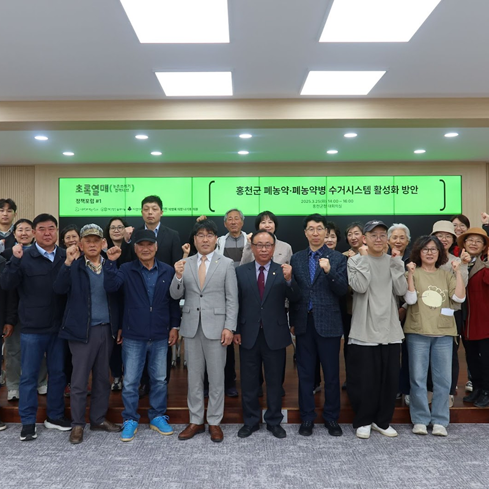
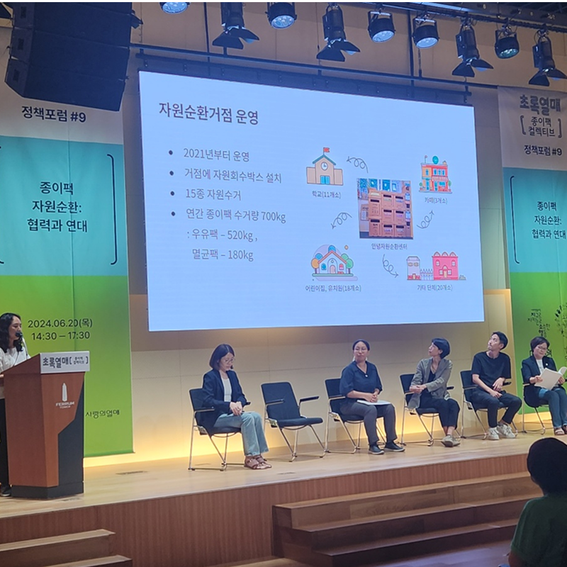

세미나
기후변화와 관련된 다양한 주제의 전문가 세미나를 통해 깊이 있는 지식과 인사이트를 공유합니다.

진행중
2025년 기후정책 전망과 시민참여 방안
새로운 기후정책의 방향성과 시민들이 참여할 수 있는 구체적인 방안에 대해 논의합니다.

예정
지자체 탄소중립 실현을 위한 정책 세미나
지방자치단체의 탄소중립 정책 수립과 실행 방안에 대한 전문가들의 의견을 들어봅니다.

완료
기후교육의 현황과 미래 방향
효과적인 기후교육 방법론과 교육과정 개발에 대한 전문가 세미나가 진행되었습니다.

완료
재생에너지 확산을 위한 정책과 기술
재생에너지 기술 발전과 정책 지원 방안에 대한 전문가 토론이 진행되었습니다.
캠페인
시민들과 함께하는 다양한 기후행동 캠페인을 통해 실질적인 변화를 만들어갑니다.

진행중
초록열매 종이팩 컬렉티브
종이팩 재활용률 향상을 위한 시민 참여형 캠페인으로, 지자체와 함께 종이팩 수거 시스템을 개선합니다.

예정
농촌쓰레기 자원순환 캠페인
농촌 지역의 쓰레기 문제 해결을 위한 마을 주민과 함께하는 자원순환 시스템 구축 캠페인입니다.
완료
시민 기후행동 100일 챌린지
일상생활에서 실천할 수 있는 기후행동을 100일간 지속하는 시민 참여 캠페인이 성공적으로 마무리되었습니다.
완료
여름 에너지 절약 캠페인
여름철 전력 사용량 증가에 대응한 에너지 절약 실천 캠페인으로, 평균 15%의 전력 절약 효과를 달성했습니다.